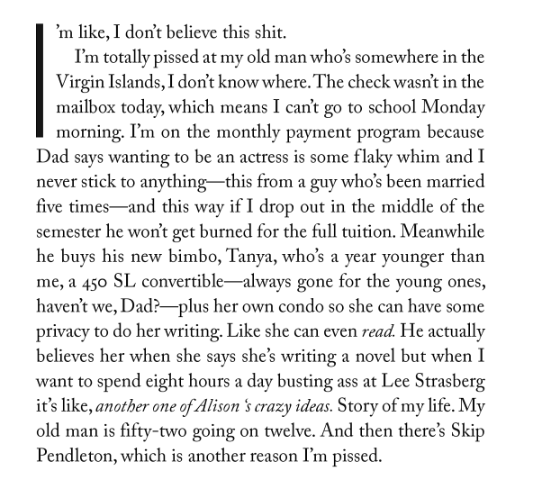

Writing Styles
Writing Styles—Two Kinds
- Formal—textbooks, academia, business, legal.
- Informal—texting, emails to friends, personal familiarity
- When to use? It depends on context, convention, and circumstance.
Reading Like a Writer
From now on whenever you read something, you should pay close attention to what is going on as far as structure, grammar, and punctuation are concerned.
Examples of Informal Writing Styles
Letter from Frank Sinatra to Mike Royko
Story of My Life--Jay MacInerney
Ham on Rye--Charles Bukowski
So I didn’t go. That Sunday I took some paper and sat down to write about how I had seen the President. His open car, trailing flowing streamers, had entered the football stadium. One car, full of secret service agents, went ahead and two cars followed close behind. The agents were brave men with guns to protect our President. The crowd rose as the President’s car entered the arena. There had never been anything like it before. It was the President. It was him. He waved. We cheered. A band played. Seagulls circled overhead as if they too knew it was the President. And there were skywriting airplanes too. They wrote words in the sky like "Prosperity is just around the corner." The President stood up in his car, and just as he did the clouds parted and the light from the sun fell across his face. It was almost as if God knew too. Then the cars stopped and our great President, surrounded by secret service agents, walked to the speaker’s platform. As he stood behind the microphone a bird flew down from the sky and landed on the speaker’s platform near him. The President waved to the bird and laughed and we all laughed with him. Then he began to speak and the people listened. I couldn’t quite hear the speech because I was sitting too near a popcorn machine which made a lot of noise popping the kernels, but I think I heard him say that the problems in Manchuria were not serious, and that at home everything was going to be all right, we shouldn’t worry, all we had to do was to believe in America. There would be enough jobs for everybody. There would be enough dentists with enough teeth to pull, enough fires and enough firemen to put them out. Mills and factories would open again. Our friends in South America would pay their debts. Soon we would all sleep peacefully, our stomachs and our hearts full. God and our great country would surround us with love and protect us from evil, from the socialists, awaken us from our national nightmare, forever...
Excerpt from I am America and So Can You
Excerpt from Re-Becoming The Nation We Always Were
Excerpt from The Checklist
Themes
Black -
White -
League -
Sky -
Beige -
Simple
Serif -
Night -
Moon -
Solarized -
LE (default)